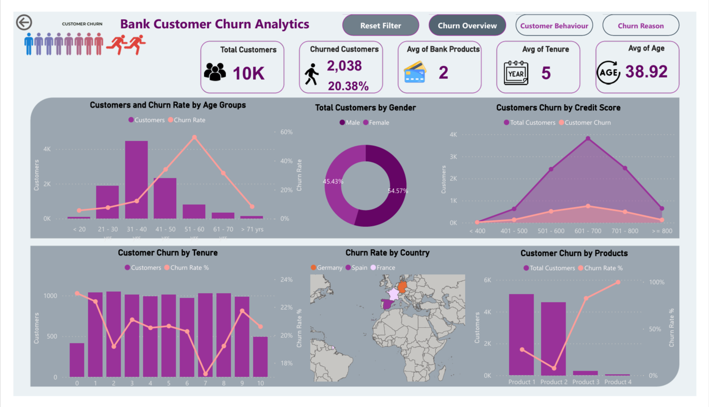
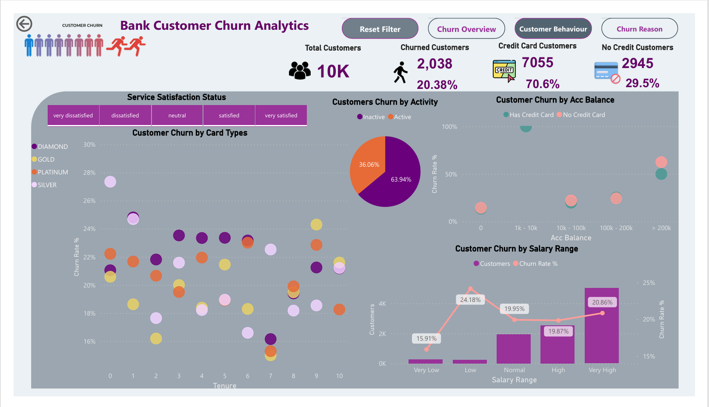
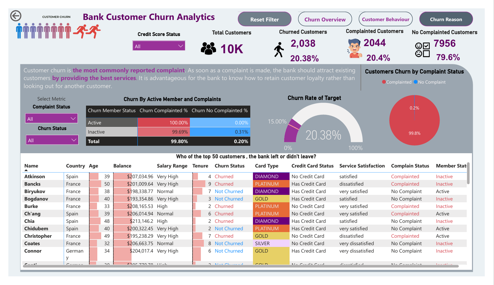
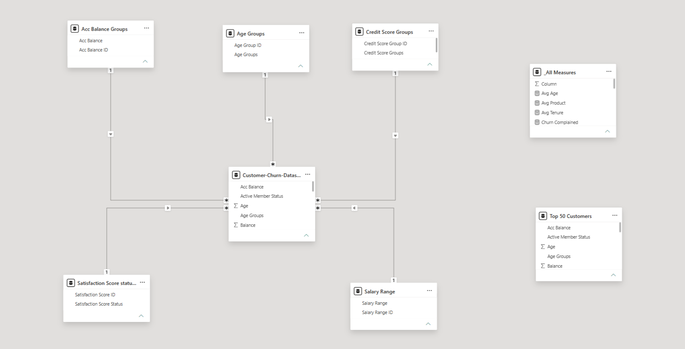

Power BI Dashboard



Project Overview
This Bank Customer Churn Analytics dashboard provides an interactive analysis of customer churn, customer behaviour, and factors associated with customer retention.
The analysis explores customer demographics, age groups, tenure, credit scores, banking products, countries, account balance, card types, activity status, salary ranges, service satisfaction, and complaint status.
Dataset
Bank Customer Churn Dataset
The dataset was obtained from Kaggle and contains customer-level banking information used to analyze customer churn and behaviour. The dataset includes demographic, financial, product, activity, satisfaction, complaint, and churn-related attributes.
Dimension Tables
- Acc_Balance Groups
- Satisfication_Score_Status
- Age_Groups
- Credit_Score_Groups
- Salary_Range
Fact Table
- Customer_Churn
Tools
Project Brief
01
Analyze customer churn across demographic, financial, product, and tenure-related characteristics.
02
Explore customer behaviour through activity status, credit-card ownership, account balance, card type, salary range, and service satisfaction.
03
Examine complaint status and customer-level information to better understand patterns associated with churn.
Data Model

Interactive Dashboard
Explore the interactive Power BI dashboard.
Open Power BI Dashboard →